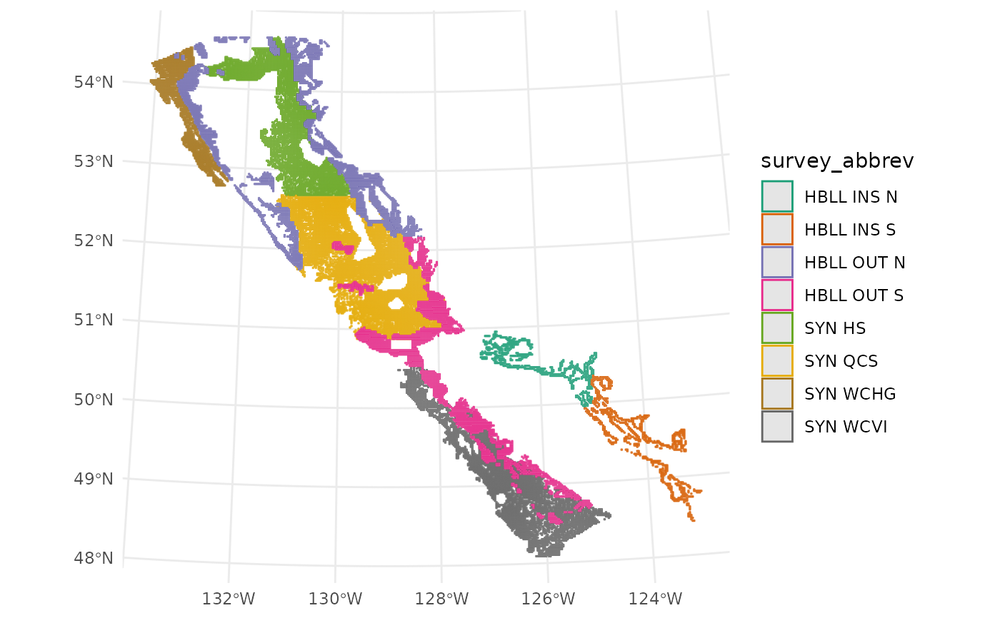

Active survey blocks for DFO Pacific groundfish surveys.
Obtained via gfdata::get_active_survey_blocks() with some cleaning
as documented in data-raw/survey_blocks.R.
Format
Simple feature (sf) collection with 66744 features and 8 fields:
- survey_abbrev
Survey abbreviation.
- survey_series_id
Unique identifier for the survey series.
- block_id
Unique identifier for each grid cell (
BLOCK_DESIGNATIONin GFBioSQL).- grouping_code
Strata grouping code used to join with strata data from the GROUPING table in GFBioSQL.
- depth_m
Depth in metres.
- active_block
Is block actively fished as of date downloaded: e.g.,
attr(gfdata::survey_blocks, "date-downloaded"))- geometry
Represents grid cell.
- area
Overwater area in km^2.
Examples
requireNamespace("ggplot2", quietly = TRUE)
library(sf)
#> Linking to GEOS 3.12.1, GDAL 3.8.4, PROJ 9.4.0; sf_use_s2() is TRUE
library(ggplot2)
gfdata::survey_blocks |>
dplyr::filter(active_block) |>
ggplot(aes(colour = survey_abbrev)) +
geom_sf() +
theme_minimal() +
scale_colour_brewer(palette = "Dark2")

attr(gfdata::survey_blocks, "date-generated")
#> [1] "2025-07-31"
attr(gfdata::survey_blocks, "date-downloaded")
#> [1] "2025-07-30"